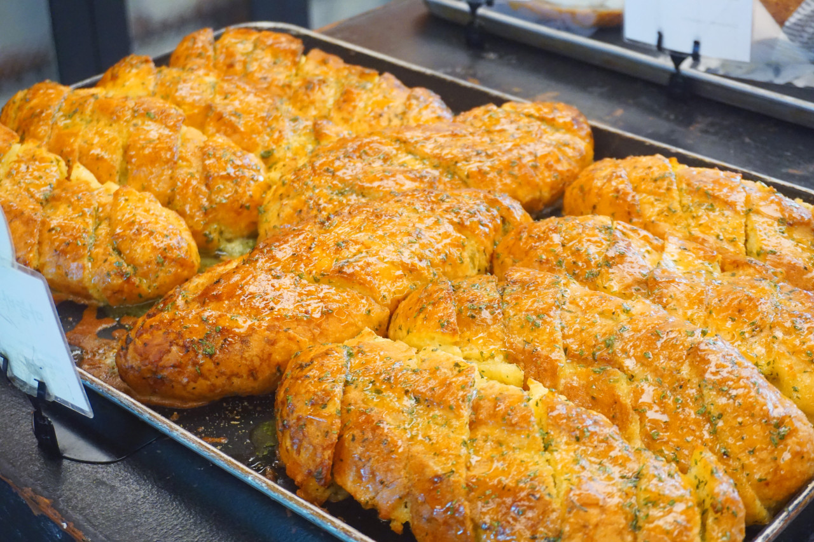

빵 취향 테스트
당신에게 어울리는 운명의 빵은 무엇일까요?
시작하기어떤 맛을 선호하시나요?
어떤 식감을 좋아하시나요?
주로 언제 드시나요?
어떤 식감을 선호하시나요?
당신의 운명의 빵은...
메론빵!

겉은 바삭하고 속은 부드러운 달콤함을 즐기는 당신에게 완벽한 빵입니다.
다시하기당신의 운명의 빵은...
도넛!

부드럽고 촉촉한 달콤함으로 일상에 행복을 더해줄 빵입니다.
다시하기당신의 운명의 빵은...
마늘바게트!

알싸한 마늘 향과 바게트의 조화가 완벽한 중독성 있는 빵입니다.
다시하기당신의 운명의 빵은...
치아바타!

담백하면서도 쫄깃한 식감으로 다양한 요리와 잘 어울리는 빵입니다.
다시하기당신의 운명의 빵은...
소금빵!

짭짤하면서도 고소한 맛이 일품인, 겉바속촉 매력의 빵입니다.
다시하기